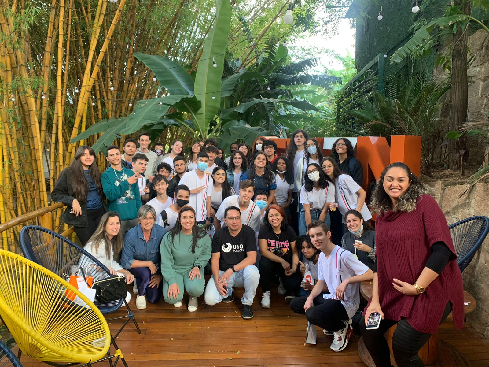

25/03/2022: Neste dia ocorreu uma reunião com representantes das empresas Eduzz e Uno. Durante o encontro, foi apresentado o cronograma anual da Ptech, destacando as principais atividades e dinâmicas planejadas para o ano, voltadas para o desenvolvimento da nossa turma.

19/04/2022: Realizamos uma reunião com representantes das empresas Eduzz, Uno e Tegra para debater o tema "Conduta Ética". O encontro proporcionou um espaço para compartilharmos nossas visões sobre ética empresarial, promovendo uma discussão produtiva sobre os valores que guiam nossas práticas e decisões no ambiente corporativo.
13/05/2022: Em 13 de maio, houve um encontro com representantes das empresas Eduzz e Uno. Durante o evento, foram entregues brindes relacionados a uma reunião anterior, que não foi registrada oficialmente, onde os cinco melhores alunos de uma atividade foram premiados com um brinde de cada empresa.

30/09/2022: Em 30 de setembro de 2022, ocorreu uma reunião com a participação das empresas Eduzz, Uno e Tegra, na qual foi abordado um tema de grande importância: a empatia, enfatizando seu valor tanto no âmbito pessoal quanto profissional.

Antes da reunião mencionada no primeiro tópico, houve outro encontro em que nos apresentamos às empresas. Falamos sobre nossas experiências com tecnologia, preferências e outros assuntos relevantes.